The logbook can be used immediately, all files are created at first start.
All data are stored automatically when the plugin or OpenCPN is closed.
To view or modify ODT-files a ODT program must be installed.
OpenOffice or LibreOffice are recommended, MS Word starts only if the
path
is entered accordingly.
To change/create layouts in ODT-format , please use Libre-/OpenOffice.
* Recommended *
If you like to enter data in fractions (1/2, 1/4) in the fields water (total), fuel (total) or AH # 1 or AH # 2, please put the data into Logbook-Optionens/Capacity.
For the watermaker (if any) please enter the water output per hour
* Recommended *
Enter the following data in the boat-tab: Boat name, home port
* Optional *
Enter your data in the crew a crewlist-tab
and create a watchlist
Click the button 'New Line' (the GPS and NMEA data should appear)
Select a layout
(please don't select a clouds-layout, I explain this
here )
Select the radio button HTML
Click the "View" button (your browser opens a new tab and displays the data)
Select the radio button ODT
Click the "View" button (your ODT-program opens with the data)
Close the ODT-program (Iimportant! Otherwise only the old data will be displayed)
Choose a different layout.
Click the "View" button ( your ODT-program opens with the data, with the new layout)
Detailed Help
Options
Please click in the fields to get an explanation / The tabs brings you to the next image
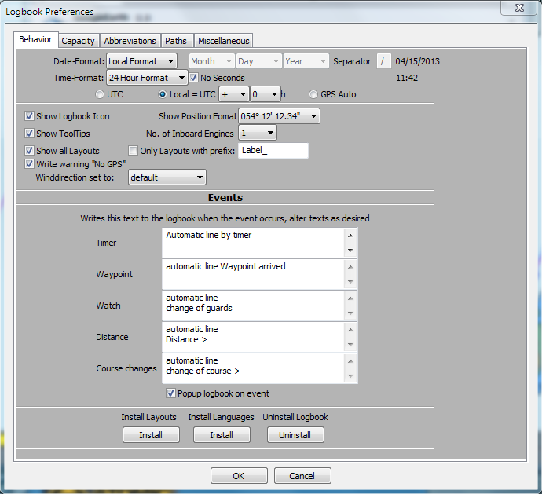
Date Format
Has two choices:
Local and Individual
Local
uses the dateformat you have selected in the OpenCPN-Mainprogram with the language. The three dateformat-selectorboxes and the separator are disabled.
Individual use this option when you like to change the local-format, e.g. for users without a translation of OpenCPN in their language and english language is set in the OpenCPN-Mainprogram or for UK/Australian users with a differnt dateformat than USA.
Date Format Selector
use this three Choiceboxes to select the dateformat.
the format is shown behind the separator-textbox.
Separator
insert the desired separator for the date
the format is shown behind the separator-textbox.
Time Format
this choicebox is disabled in countries with a 24-hour-format, this depends on the selection of the language in the OpenCPN-Mainprogram.
in countries with a 12-hour-format, you can switch between 12/24-hour-format.
e.g. for users without a translation of OpenCPN in their language and english language is set in the OpenCPN-Mainprogram.
No Seconds
if checked, no seconds are used, stored and displayed.
Show Logbook Icon
add / delete the icon to the toolbar of OpenCPN
Show Position Format
changes the format of the display level.
12° 45 ' 30 "or 12° 45,5'
When switching within a logbook made before, the entries are not converted to the new format!
Show Tooltips
shows the little help texts
No. of inboard Engines
Select how many engines your boat has.
It sets the Engine/Sails-Grid to one or two engines, selects the correct HTML/ODT-layout and disables the
second engine in NMEA-Options by selecting one engine.
Show alle Layout
With hook all available layouts are displayed in the layout-dropdown-box
Without hook only layouts in 'layout only with prefix' are shown
only Layouts with Prefix
defines the filter for the layouts
e.g. if you have created your own layouts with the prefix "My_" and you give them a prefix here, only your own layouts are shown in the layout-dropdown-box..
The underscore is important, please do not forget!
write warning No GPS
when GPS isn't used or it may be defective the message 'No GPS' appears on and on.
by removing the hook the constant repetition of the message 'No GPS' in 'remarks' are suppressed
Winddirection set to
is related to either "default" = relative to the ship or "Heading" = wind direction
'Heading' is only available if a device is present, which provides one of the NMEA sentences $HDT or $HDM, otherwise automatic 'default' is used.
Automatic Lines
You can start/suspend/stop events in the statusbar of the logbook.
The text you enter here will be displayed when a event occurs
Text Waypoint arrived
sets this text in 'Remarks' if a waypoint-event occurs.
Text Watch Changed
sets this text in 'Remarks' if a change-of-guards-event occurs.
Text Distance
sets this text in 'Remarks' if a distance-event occurs.
Text Course-Change
sets this text in 'Remarks' if a course-change-event occurs.
Text Timer
sets this text in 'Remarks' if a timer-event occurs.
UTC/Local/GPS Auto
GPS sends time-data in UTC
Check this radiobutton, if you like to set the time in the logbook to UTC
Check the Local radiobutton, if you like to set the time in the logbook to local time. Select +/- and choose your timezone
GPSAuto sets the locale time ( Formula: +/- (Your Longitude/15) ) in the field 'Time'
Examplel: UTC=15:00h (03:00 PM), at 30°W (-2h) = 13:00h (01:00 PM), this time is inserted in the logbook
the true locale timezone is disregarded
To document this, a correction in the dropdown-box for the timezone is made
Install Layouts
Search in the filedialog for the file 'LogbookKonni_Layouts.zip'
Windows needs this button only to install layout-updates.
All layouts are copied with the exe-installer.
Install Languages
used only by Linux and Apple
in windows this button is used only for translation-updates. All translations are in the installer
Linux Remarks
A installed and working sudo command is required !
How to install the languages manual:
Enter the following command in a terminal: find /usr -name opencpn.mo
You should get get a output like: /usr/local/share/locale/nl/LC_MESSAGES/opencpn.mo
The language-installpath in this case is /usr/local/share/local
Change the /usr into a different directory (e.g. /opt) when nothing was found.
run as administrator the command
unzip -o path_to_LogbookKonni_Languages.zip -d your_language-installpath
Windows only:
After you clicked the button, close OpenCPN. In the filedialog select 'uninst_logbookkonni_pi.exe'. After the Uninstall you can restart OpenCPN.
the plugin will be uninstalled properly, when you follow this instruction
Please click in the fields to get an explanation / The tabs brings you to the next image
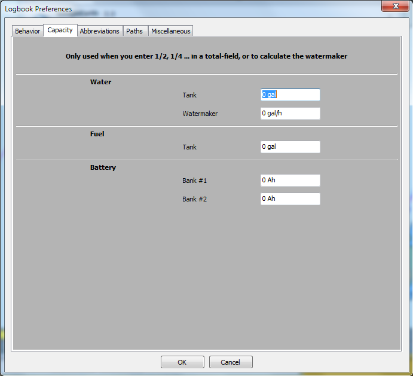
The following entries are nessesary, if you like to insert Values in the fields
Water-, Fuel (total), AH #1, AH #2 and the Watermaker-Output
in factions (1/2,1/4)
Watertank
the capacity of the Watertank
Watermaker
the output of the Watermaker per hour
Fueltank
Capacity of the fueltank
Batterybank #1
Capacity of Batterybank #1
Batterybank #2
Capacity of Batterybankl #2
Please click in the fields to get an explanation / The tabs brings you to the next image
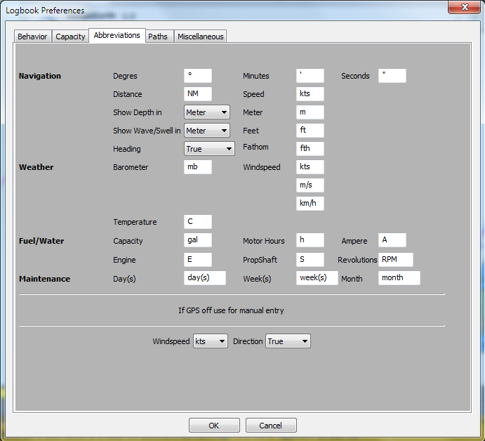
Abbreviations
If a translation for the logbook-plugin is availabe in your language, the amounts are displayed correct.
But you can alter every field (e.g from (gal) to (l)iter) and (l)iter is used with the next logbook entry. It's saved when OpenCPN is closed. At the next sartup it's the default.
Windspeed/Winddirection
Without a NMEA-Windmeter or GPS is out of order, then this options is used for the Wind
A NMEA-Windmeter sends the data automatically, so this option is used only when you enter data manually.
Please click in the fields to get an explanation / The tabs brings you to the next image
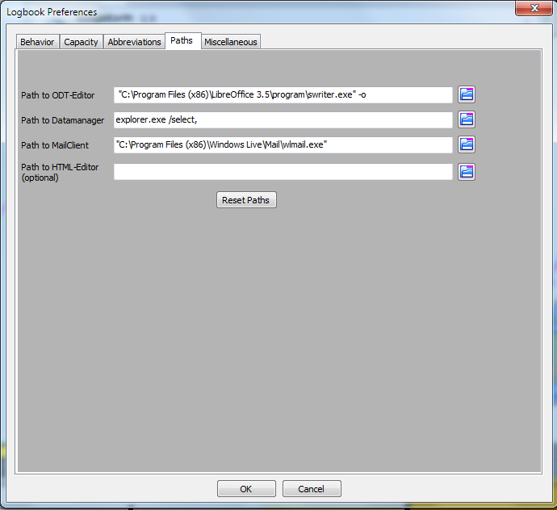
Path to the ODT-Editor
The recommended ODT-Editors are Open- or LibreOffice.
If OpenOffice/LibreOffice is installed the path is set automatically.
With a MS-Word installation the path is not correct displayed. please click on the folder-symbol, search for the file 'WINWORD.EXE' and click OK. In the lineeditor-field append a '%s'.
"C:\YourPathToWord\WINWORD.EXE" %s
Word displays that it has to "repair" the file, but displays then the layout with your data.
It's recommended that you use Open- oder LibreOffice to alter/create a layout.
Path to the datamanager
For Windows the Explorer is predefiend
For Linux Dolphin (KDE) is predefiend
For Apple the Finder is predefined
Path to the mail-program
*Optional*
Only used when you like to send a layout via email to a friend.
Path to the HTML-Editor
*Optional*
if you want to alter a HTML-layout, please set the path to the editor here
This option is used only if you like to alter/create a layout. To display your data the browser is used.
Filedialog
Opens a filedialog
Reset Paths
Resets the paths to the predefiend values
Please click in the fields to get an explanation / The tabs brings you to the next image
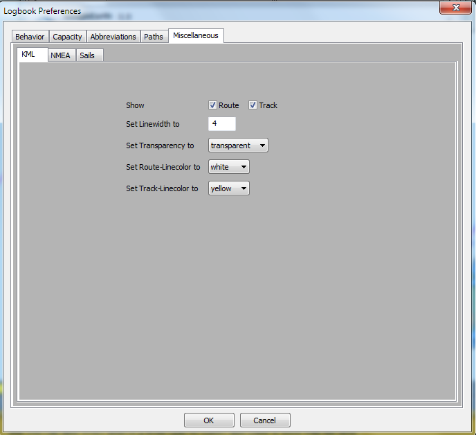
For Windows the Explorer is predefiend
For Linux Dolphin (KDE) is predefiend
For Apple the Finder is predefined
Path to the mail-program
*Optional*
Only used when you like to send a layout via email to a friend.
Path to the HTML-Editor
*Optional*
if you want to alter a HTML-layout, please set the path to the editor here
This option is used only if you like to alter/create a layout. To display your data the browser is used.
Strg-LeftMouseClick or dragging over the rowheaders selects multiple rows.
A rightclick then shows a menu to delete multiple rows or flip (swap) the day/month of the date, e.g. 12/8/2012 to 8/12/2012.
This is only nessesary when the converting of tthe dateformat goes wrong, e.g you have used two different dateformats before in the logbooks
At least one row has to be selected that this menu pops up.
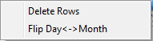
The rightclick-menu is accesible in every column of the grid.
In the following columns the menu is extended:
Show hidden columns
shows all previously hidden columns
Hide Column
hides a column
but the column is displayed in your Browser/ODT-program
you can alter a layout as desired
if you have accidentically hide a column, you can recover this column, when you go with the mouse to the left separator(the shape of the mouse changes) and drag it to the right.
Search in Logbook
Opens a dialog to search in the logbook
- see image -
Shutdown Logbook
Normaly the logbook runs after activation in the background until OpenCPN is closed.
If you want to close the logbook completly use this option. No events are revceived now and the memory is freed !
Restart the logbook by clicking the icon in the toolbar again.
Textblocks
For the reason that you don't have to enter the same texts on and on, it's possible to use textblocks in the following Columns:
The textblocks are selected via the rightclick-menu.
With a rightclick in the columns shown above you get a extended rightclick-menu
If you select 'use Textblocks...' the dialog on the right appears.
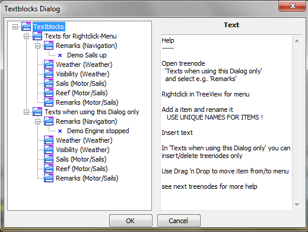
In this dialog you see two treenode with identical subnodes.
The differnce is, that with 'Texts for rightclick-menu' the names of an item appears on top of the rightclick-menu (in this demo 'Sails up') and can inserted with a click on it, while in 'use Textblocks' you have to select the textblocks in this dialog to insert. Place not often used textblocks here to not overload the rightclick-menu..
The entries 'Remarks (Navigation)' to 'Remarks (Engine/Sails)' correspond to the columns in the grid.
You can move textblocks with Drag 'n Drop.
Example:
Move the item 'Demo Engine started' in 'Remarks (Engine/Sails)' with drag 'n drop to 'Remarks (Navigation)' in 'Texts for the rightclick-menu'. Click Cancel (to not immediadetly insert) and call in the Tab 'Navigation' the column 'Remarks' the rightclick-menu.
The name of the textblock 'Demo Engine started' is prepended to the menu and the text is inserted with a click on the menu-entry.
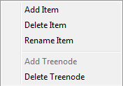
With a rightclick on the treenode e.g. 'Weather' this menu appears.
If you select 'Add Item' in the treenode 'Weather' a new item is appened.
Enter a name for the textblock and please take care for unique names. In the textexditor enter now the desired text. Go on that way to enter more textblocks. Hit OK when you like to insert a text immediatly or Cancel (the text is stored but not inserted)
Delete Item - makes exactly this
Rename Item - rename a textblock
Add Treenode - in 'Texts with this dialog only', only
For a better overview it's posibble to add a new node and insert new items to it.
Delete Treenode - in 'Texts with this dialog only', only
deletes a node
and all items in it
Textblock-Example
Go to tab 'Logbook' select the tab 'Motor/Sails' and click the right mouse-button in the field 'Sails'.
Select 'use Textblocks...' and the following dialog pops up
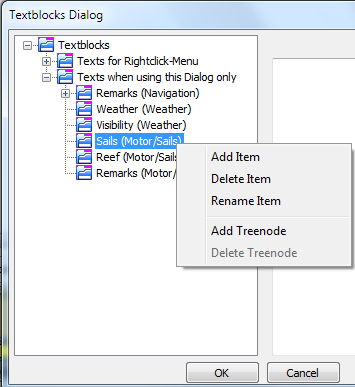
here select 'add Item'
overwrite the itemname
with 'Hoisted M/G/'
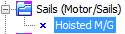
and insert in the text-field to the right
'Hoisted Main and Genua 130'
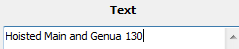
Click the OK-Button, the text is inserted into the Sails-field in the logbook.
Go to the next Sails-field below or above, rightclick, select 'use Textblocks...' , look for your item 'Hoisted M/G', select it and click OK.
This is the procedure for seldom used textblocks or use it as a parking position, but it's possible to move the item into the rightclick-menu for more conviniece.
See next step...
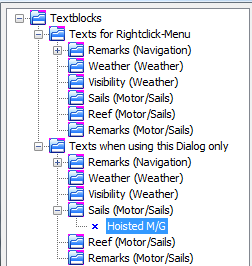
Drag 'n Drop the item from 'Texts when using this dialog only' to 'Texts for Rightclick-Menu'
- as shown in the right image -
Click 'Cancel' (doesn't insert the item now)
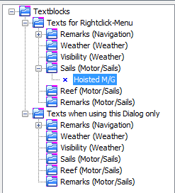
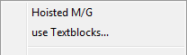
Rightclick in the logbook-field 'Sails' shows now the item.
By a mouseclick on the menu-entry it's inserted in the field.
You can always drag 'n drop items from 'Texts when using this dialog only' to 'Texts for Rightclick-Menu' and vice versa.
'Texts when using this dialog only' doesn't show the items in the rightclick-menu, they are only reachable in the rightclick-menu by selecting 'use Textblocks'
'Texts for Rightclick-Menu' are shown on top of the rightclick-menu
The fields for using textblocks are decribed here.
Click in the image on a grid-field or a button, a tab jump's to the next image
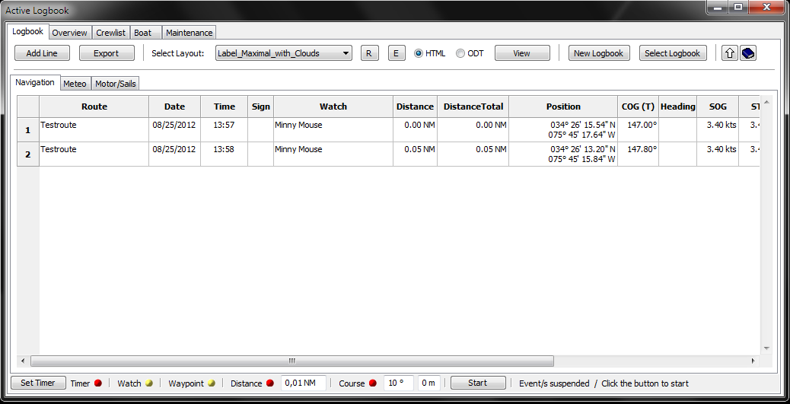
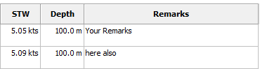
Add Line
Appends a new line to the logbook.
Some fields from the entry above the new line are copied, but they can be overwritten if desired.
Export
Opens a filedialog
You can save your data in different formats to other devices (e.g. USB-Stick) or directories
The following formats are supported:
HTML, ODT, ODS, XML, CSV, TXT
if ODT or HTML appears in the dropdown-box depends on the selection of the HTML/ODT-radiobutton next to the layout-dropdown-box
You can use this button if you want e.g. create a backup of you data (select 'Backup'). Please don't change the filename.
The active logbook is always saved on closing OpenCPN. There is no need to click this button.
Import a CSV-File into Libre/OpenOffice (adjust your language): 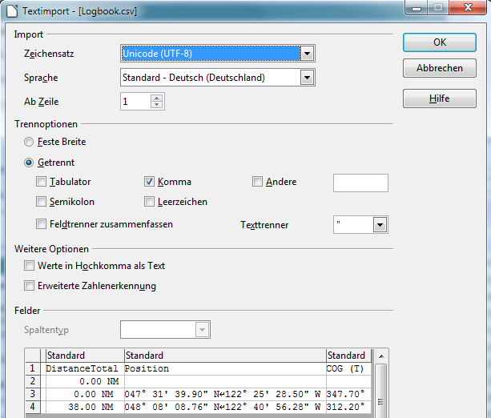
Select Layout
You can choose your desired layout in the dropdown-box. With the 'View'-button it's displayed.
R
Reload the layouts in the dropdown-box.
You only need this button, when you created a new layout yourself.
E
Opens the Edit-Dialog
The selected layout is displayed in the titlebar.
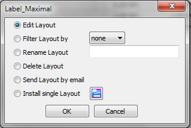
Edit Layout
Before you use this option make sure you have set the path to your HTML- and/or ODT-Editor in Options/Paths.
By clicking OK the editor opens with the layout selected in the Dropdown-Box. Create a new layout or modify a exsting one as explained here.
Filter Layout by
When you have created e.g. your own layouts with the prefix 'my', you can filer with this option your layouts only.
The dropdown-box shows all available prefixes.
Rename Layout
The layoutnames are not translated. If you like you can give them rename in your language or give them a more meaningfull name.
Delete Layout
When you don't like a layout, delete it with this option.
You cannot recover them.
Send Layout by email
Before you use this option make sure you have set the path to your mailclient and datamanger (Explorer/Dolphin/Finder).
When you have made a nice layout, you can send this to a friend.
Install single Layout
When you have received a layout, you can install it with this option.
HTML
selects HTML as display-format
ODT
selects ODT as display-format
View
Opens depending on the selected option (HTML or ODT) the browser or the ODT-program with your data.
The following Tips are for the logbook only,
The Route, in which the mousecursor is, is displayed in the layout select in the 'Select Layout'-dropdown-box.
To choose another Route place the cursor anywhere in the row.
To choose the whole logbook, click
before you hit this button.
in the left upper corner of the grid. This selects all data in the logbook.
New Logbook
Creates a new Logbook
If you anserd in the security-dialog with 'Yes', another dialog asks you wether to use the last line of your active logbook as first line in the new logbook or not.
'No' creates a complete new logbook
Created logbooks can be viewed with the button 'Select Logbook'
When you create a new logbook is up to you, but if a logbook exceeds 800 Lines a warning dialog pops up.
Select Logbook
Opens a dialog to choose the previously created logbooks.
you cannot append lines to an "old" logbook.
If you view an old logbook and a event occurs (e.g. timer), then the active logbook is selected, the line is appended and a information-dialog pops up..
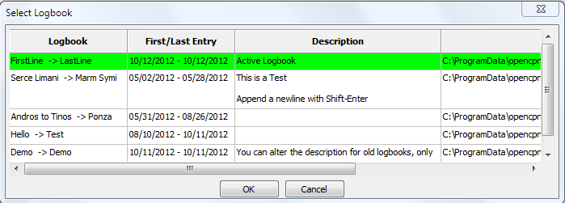
You can insert a description for a old logbook, but not for a aktive. All other fields are readonly.
Click twice with the mouse in the description-field to get the texteditor.
Shift-Enter appends a newline in the texteditor.
A selected logbook is highlighted in blue, then click the OK-Button.
The field 'File' (truncated here) shows where your data is stored.
Show/Hide Statusbar
Shows or hides the statusbar
Help
This Help
Corner in the Grid (top/left)
With a click here you select the whole logbook data
With a click on the 'View'-button the whole logbook is displayed in the browser/ODT-program
With a click in a column the selection disappers and only the route the cursor is in will be displayed.
Column Route
Enter your route here
You have three alternatives:
If you have activated a route in OpenCPN, the routename is inserted automatically
with a rightclick open the menu and choose 'Select Route'. In the Route-Dialog choose the Route and hit OK.
This procedure has to do only once, at the next inserted line this route is the default.
Unnamed Routes are not shown in the dialog.
manuell
here also, the routename you entered is the default for the next line.
Column Date
With a connected GPS the column gets the data frm there
If GPS is off, the date of your computer is used
Column Time
With a connected GPS the column gets the data from there, +/- the selected
timezone
in options
Column Sign
If you don't use the tab maintenance, don't care about this 'strange' sign-column.
The Sign is used in the tab 'Overview' (internal) und in the tab 'Maintenance'.
'S' (like at (S)ea) is set automaticlly when the boat moves >= 0.1 NM from the last postion.
You can use all characters except 'S' which is used internal.
My recommondations:
A = Anchor
M = Mooring
H = Harbour
Example:
You have a gas engine and at sea you determine that it needs new spare plugs.
Make a reminder in maintenance to change them in the next harbour.
Go to the maintenace-tab/service and add a new line. In the 'IF"-column select in the choicebox 'Sign'.
Enter in 'Warnvalue' a 'H' (without quotes) for harbour or another letter in your languge.
In 'Service TODO' enter some text.
Go to the logbook and enter in the last line now the the corresponding letter for harbour (in this example a H).
The border of the logbook changes to red to indicate that you should look into maintenance.
In maintenence/service the line with the 'H'-sign is highligted in red.
You can now delete the line or select in the rightclick-menu ' Service done'.
In this case the line is not deleted but the 'Active' is set to 'No', the priority is set to zero and the background of the row is set to neutral.
Column Watch
You have two alternatives:
with rightclick and popup-menu
with a rightclick in this field you'll see on top of menu the names of the crewmemebers in the watchlist, if any inserted there.
A click on the name inserts it in the column ''Watch',
You can insert multiple persons by clicking multiple times.
manuell
if you have checked in options 'If Watch changed', all names of crewmembers in the watchlist at this watchtime are inserted.
Column Distance
Shows the distance since last position
This column is recalculated by entering a new position.
Column Distance total
Show the distances summarized
This column is recalculated by entering a new position.
Column Position
With GPS on the position is entered automatically.
With GPS off you must enter the postion manuall
Click mit the mouse in the column and a dialog appears in the format which was defined in options.
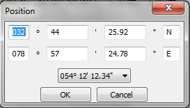
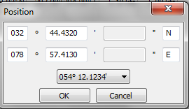
You can switch between the formats with a dropdown-box und enter the data in that format. In the column position is
always
the format entered, which is defined in options.
Column COG
Course over Ground
With GPS on the position is entered automatically.
Column Heading
Course throught water (Heading)
If you own a NMEA-Device which sends this data, it's done automatically.
Column SOG
Speed over Ground
Wird bei eingeschaltetem GPS automatisch eingetragen.
Column STW
Speed trought water
if your speedo sends data via NMEA ,it's inserted automatically
Column Depth
if your echosounder sends data via NMEA ,it's inserted automatically
Column Remarks
Insert your desired text. To insert a newline use Shift-Enter.
When a event occurs and GPS is on the text from Options/Behavior is inserted automatically.
You have three alternatives:
manuell
Enter your text by hand.
via popup-menu
Rightclick in the column and the menu appears with the names of the textblocks on top.
Here you see the most used textblocks.
A click on the name of the textblock inserts the text in the column.
How to create a textblock und show it on top of the menu ist decribed here.
via textblocks
These textblocks are not often used.
Rechtclick in the column and select in the menu 'use Textblocks...'
Klick in the knot 'Texts with this dialog only' on +-symbol
and select the +-symbol in the knot 'Remarks (Navigation)'
Select now a textblock and hit OK.
Click in the image on a gird-field or a button, a tab jump's to the next image
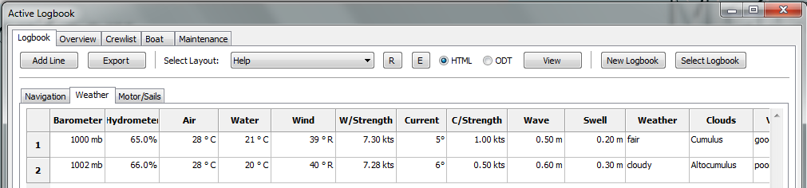
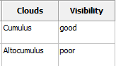
Column Barometer
Column Hygrometer
Column Air
Only manuell insertion of data
Display of air-temperature in °C oder °F.
Select this in options/abbreviations
Column Water
If you own a device which sends NMEA-data (water-temparature) it's done automatically
Display of water-temperature in °C oder °F.
Select this in options/abbreviations
Column Winddirection
If you own a device which sends NMEA-data (winddirection) it's done automatically
If you enter data manually the definations in options/abbreviations (at the bottom) are used
Column Windspeed
If you own a device which sends NMEA-data (windspeed) it's done automatically
m/s, kts, km/h - True oder Relativ - it depends on the approach of your NMEA-device
If you enter data manually the definations in options/abbreviations (at the bottom) are used
Column Current
Column Current Strength
Column Waveheight
Column Swell
Only manuell insertion of data
Column Weather
You have three alternatives:
manuell
Enter your text by hand. a newline is created by
Strg+Enter.
via popup-menu
Rightclick in the column and the menu appears with the names of the textblocks on top.
Here you see the most used textblocks.
A click on the name of the textblock inserts the text in the column.
How to create a textblock und show it on top of the menu ist decribed here.
via textblocks
These textblocks are not often used.
Rechtclick in the column and select in the menu 'use Textblocks...'
Klick in the knot 'Texts with this dialog only' on +-symbol
and select the +-symbol in the knot 'Weather'
Select now a textblock and hit OK.
Column Clouds
you have two alternatives:
manuell
Insert your text by hand
via rightclick-menu
In the menu you see the most common cloudtypes.
By selecting a type the image of the cloudtype appears left or right. A click on it inserts the type in the column.
If you select a layout which contains the word 'cloud', the image of the cloud is displayed in the browser/ODT-program.
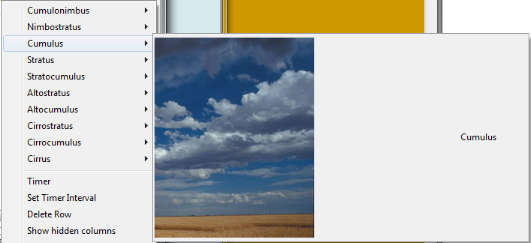
Column Visibility
You have three alternatives:
manuell
Enter your text by hand. a newline is created by
Strg+Enter.
via popup-menu
Rightclick in the column and the menu appears with the names of the textblocks on top.
Here you see the most used textblocks.
A click on the name of the textblock inserts the text in the column.
How to create a textblock und show it on top of the menu ist decribed here.
via textblocks
These textblocks are not often used.
Rechtclick in the column and select in the menu 'use Textblocks...'
Klick in the knot 'Texts with this dialog only' on +-symbol
and select the +-symbol in the knot 'Visibility'
Select now a textblock and hit OK.
.
Click in the image on a gird-field or a button, a tab jump's to the next image
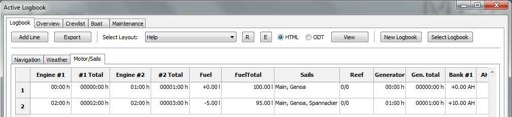
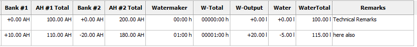
The operatiing time is added to the total.
The following formats are supported (Example 1 hour 30 minutes):
1:30
1,30
1.30
Column Eingine #1 total
Column Engine #2 total
Spalte Generator total
Column Watermaker total
Only manuell insertion of data
Hours/Minutes total
The following formats are supported (Example 1 hour 30 minutes):
1:30
1,5
1.5
Watch out !
The input-format has changed against the column before
because some devices show the amount of minutes as decimal fractions !
Column Fuel
Column Water
Only manuell insertion of data
plus or minus to the tanks:
If you fill the tank set a plus-sign, taking sets the minus-sign automatically.
Column Fuel total
Column Water total
Only manuell insertion of data
If you enter data in Column 'Fuel' or 'Water' this column is calculated automatically. if you enter data here, the +/- amount in inserted in 'Fuel' or 'Water
You can use 1/2, 1/4..... if you have set a value for the tanks in options capacity
Column Sails
You have three alternatives:
manuell
Enter your text by hand. a newline is created by
Strg+Enter.
via popup-menu
Rightclick in the column and the menu appears with the names of the textblocks on top.
Here you see the most used textblocks.
A click on the name of the textblock inserts the text in the column.
How to create a textblock und show it on top of the menu ist decribed here.
via textblocks
These textblocks are not often used.
Rechtclick in the column and select in the menu 'use Textblocks...'
Klick in the knot 'Texts with this dialog only' on +-symbol
and select the +-symbol in the knot 'Sails'
Select now a textblock and hit OK.
Colummn Reef
You have three alternatives:
manuell
Enter your text by hand. a newline is created by
Strg+Enter.
via popup-menu
Rightclick in the column and the menu appears with the names of the textblocks on top.
Here you see the most used textblocks.
A click on the name of the textblock inserts the text in the column.
How to create a textblock und show it on top of the menu ist decribed here.
via textblocks
These textblocks are not often used.
Rechtclick in the column and select in the menu 'use Textblocks...'
Klick in the knot 'Texts with this dialog only' on +-symbol
and select the +-symbol in the knot 'Reef'
Select now a textblock and hit OK.
Column Batterybank #1
Column Batterybank #2
Only manuell insertion of data
Generated or used in the batterybanks:
If you generated energy please prepend the plus-sign, otherwise a minus-sign is prepended automatically
Column AH Batterybank #1 total
Column AH Batterybank #2 total
Only manuell insertion of data
If you don't use the columns batterybank #1/#2 the amount is calculated and insert there.
If you set a value for batterybank #1/#2 in options capacity, you can enter 1/2 1/4....
Column Watermaker Output
if you set a value for the watermaker-output per hour, the colum is calculated automaically
Column Remarks
Insert your desired text. To insert a newline use Shift-Enter.
When a event occurs and GPS is on the text from Options/Behavior is inserted automatically.
You have three alternatives:
manuell
Enter your text by hand.
via popup-menu
Rightclick in the column and the menu appears with the names of the textblocks on top.
Here you see the most used textblocks.
A click on the name of the textblock inserts the text in the column.
How to create a textblock und show it on top of the menu ist decribed here.
via textblocks
These textblocks are not often used.
Rechtclick in the column and select in the menu 'use Textblocks...'
Klick in the knot 'Texts with this dialog only' on +-symbol
and select the +-symbol in the knot 'Remarks (Engine/Sails)'
Select now a textblock and hit OK.
The Statusbar
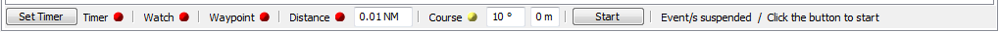
In the statusbar you can start/suspend/resume or stop a event.
A red bullet indicates a stopped event, a green bullet a running event, a yellow bullet a suspended event.
To start a event click on a red bullet, it changes from red to green.
To suspend all running events (green) click the 'Stop'-Button. All running event-bullets change to yellow to indicate that they are paused.
All newly started events are now paused too (yellow). To start all paused events click the 'Start'-Button.
To stop a event (green or yellow) click on the bullet, it changes to red.
When you close OpenCPN with running (green) events, theese events are suspended (yellow) at next startup.
Set a event:
Timer-Event
Before you start a timer click the 'Set Timer'-Button.
This dialog pops up:
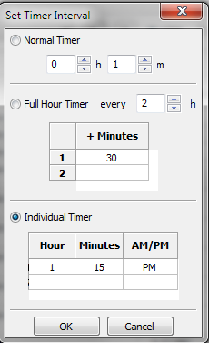
Normal Timer
Select hour and minutes.
Full Hour Timer
Select the hour-interval -every hour, every 2 hours etc.- and the minute of the hour. Enter as much minutes as desired.
To delete a row or clear all use the rightclick-menu in the grid
e.g. time now = 08:10, hour-interval = 2 h, minutes = 30
first logbook-entry at 08:30, next entries at 10:30, 12:30.....
Individual Timer
Here you are free to enter a time when a logbook-entry is made.
Enter as much hours/minutes as desired.
To delete a row or clear all use the rightclick-menu in the grid
*Note
In a 24-hour-Country or when in Options the 24-hour-format is selected, no AM/PM Column is shown.
*Tip
In a 12-hour-format enter the hour in 24-hour-format, the AM/PM-string is set automatically.
Click OK and start the event by clicking the red bullet.
With a already running timer-event (green), it's not nessesary to click the timer-bullet again.
Only with suspended events (yellow) click the 'Start'-Button also or the timer isn't start.
Only one timer is allowed, you cannot mix two or the three timers.
Watch-Event
To use this event properly it's nessesary to insert data in the watchlist - as discribed here or in this example-
The name/s of the watchmember/s are inserted in the logbook 'Watch'-column automatically when the guard changes.
Click the bullet to start the event (green).
When the bullet changes to yellow, all events are suspended. In this case click also the 'Start'-Button.
Waypoint-Event
It's nessesary to activate a route with waypoints in OpenCPN-MainProgram.
When a wayoint is reached or skipped a logbookentry is inserted.
Click the bullet to start the event (green).
When the bullet changes to yellow, all events are suspended. In this case click also the 'Start'-Button.
Distance-Event
Enter first the distance in the textbox.
When the distance is reached a logbookentry is inserted.
Click the bullet to start the event (green).
When the bullet changes to yellow, all events are suspended. In this case click also the 'Start'-Button.
Course-Event
Enter first the amount in degrees and a delay in minutes.
When the course changes greater by the amount of degrees this event occurs. The new course is inserted in the logbook after the delay in minutes.
e.g Course 45°, Delay 5 Minutes.
wind = 45°, you sail against the wind at 0°
now you go over the bow to 94°
without a delay (=0 Minutes) the event fires at 90° (which is not your actual course), thatwhy it's always better to set a delay of a few minutes.
Click the bullet to start the event (green).
When the bullet changes to yellow, all events are suspended. In this case click also the 'Start'-Button.
Start/Stop-Button
With this button you suspend (bullets=yellow) or resume (bullets=green) all running/suspended events.
Text
The text explains a bit the status of the event/s.
Overview
The tab 'Overview' displays a summary of logbook data (one or all).
If you select 'Goto Route' in the rightclick-menu, the route is displayed in the tab 'Navigation' or the old logbook is loaded and the route is displayed.
A doubleclick in the column-header hides a column.
The selection 'Show all Columns' in the rightclick-menu shows all columns.
Click in the image on a gird-field or a button, a tab jump's to the next image
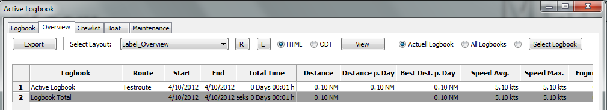
Active Logbook
Displays the data of the active logbook only
All Logbooks
displays data of all available logbooks
Select Logbook
Opens a dialog to select a old logbook.
Data
The column-header speaks for itself.
Crewlist / Watchlist
There are two Grids in the window. the one above is the crewlist, the other is the watchlist.
Between the grids is a moveable window-separator. Drag the separator with the mouse up or down.
Inside a grid the
Tab-/Cursorkeys
have trhe same functionality as in the logbook
Both grids have a rightclick-menu.
The relation between the crew-/watchlist and the logbook is perhaps explained best by a short example.
If you have already data in the crewlist, step 1 and 2 are not nessesary.
If you have data in the watchlist, please click the 'Clear'-Button first.
Click 3x on 'add Crew'
in the crewlist
enter data in Name, Firstname, only
in the watchlist enter in the column 'Watchtime' e.g. 3.30
drag 'n drop three crewmembers from the crewlist in 1.,2. and 3. watch
click 'Calculate' - that's all you have to do
*optional
switch to the logbook-tab and click 'Add Line' - the crewmember/s appear in the 'Watch'-column
*optional
you can now start the watch-event also
There are a lot more options in the watchlist like individual watchtimes, static watchmembers, split/merge watches etc., which is explained in detail here.
Rightclick-Menu's
Crewlist and watchlist have different Menu's
Crewlist
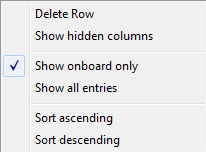
Delete Row
deletes a crewmember from the crewlist
Show hidden columns
shows all hidden columns again
Show onboard only
Shows only rows with a 'Yes' in the column 'on Board'.
Show all crew-entries
Shows all entries in the crewlist
If you uncheck the column 'on Board' with ''Show onboard only', the entries is visible here..
Sort ascending
Sorts the entries by the column where there mousecursor points.
Sort decending
Sorts the entries by the column where there mousecursor points.
Watchlist
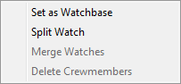
Set as Watchbase
When you have made changes on a specific day, e.g. day 3 merged watches because a member is seasick and doesn't recover. Then you can set this day as new watchbase.
Delete if nessesary the unused members and click 'Calculate'.
Split Watch Splits the Watch into two Watches.
Please select only one column.
If more than one column is selected, this option is disabled.
e,g, 1.Watch with 4 hours is split into 1.Watch 2 hours and 2.Watch 2 hours
Swap two watches If haven't selected two columns this option is disabled. To change the members of two watches select in the columnheader two Columns only by dragging over two headers with the mouse or use Strg+LeftMouseClick.
Merge Watches
If haven't selected at leat two columns this option is disabled.
Select first the desired columns by dragging over the columnheader or with Strg+LeftMouseclick.
Delete Crewmembers
If haven't selected at leat one column this option is disabled.
Select first the desired columns by dragging over the columnheader or with Strg+LeftMouseclick.
Click in the image on a gird-field or a button, a tab jump's to the next image
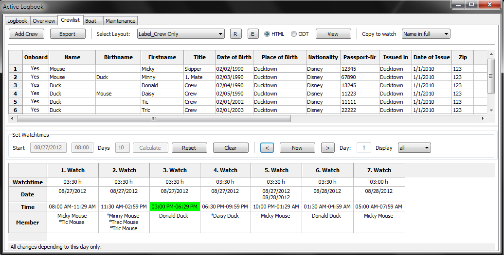
Add Crew
Appends a new line to the crewlist
on Board
Check/Uncheck with a click wether a person is onboard or not
To add a person to the watchlist he/she
must
be on board
Fields in Crewlist
The fields explain theirself by the column-headers
There is no neeed to insert data in all fields (except Name, Firstname).
You can alter the sequence in the crewlist by drag 'n drop a member.
You can also drag 'n drop a crewmember to the watchlist.
ColumnHeader in watchlist
Drag over the column-header or use Strg-LeftMouseClick to select columns
Columns in the watchlist
The fields explain theirself by the column/row-headers
Copy to watch
When you drag 'n drop a crewmember to the watchlist, you can select if you like to insert the fullname, the lastname or the firstname.
Startdate
select the startdate of your trip in the calender-dialog
Starttime
enter the starttime of your trip. please use 24-hour-format.
Days
enter the the aprox. duration of your trip
Calculate
click 'Calculate' when you have made all changes to the watchtimes and dragged 'n dropped crewmembers from the crewlist - see short explanation -
Date, Time, Days the button 'Calculate' is disabled now.
Now the watchtimes are calculated, the crewmembers shifts (if nessesary) and the result is stored on disc. The actual watch is highlighted is green.
You are now in day-mode. All changes you make now (split/merge/alter crewmembers) apply to this day only.
You can set this day as new watchbase if desired or click 'Reset' to go back to the watchbase.
Reset
sets the watchbase (day = 0)
the button 'Calculate' is enabled now
Clear
Clears the grid and deletes all watchdata on disk.
the button 'Reset' is disabled now.
< Now >
go with < one day down or with > one day up. 'Now' jumps to the current date/time.
Day
displays the day
Display
select how many days are displayed in your browser or ODT-program
Watchlist Example
Please create for this example the following seven crewmembers in the crewlist:
Micky,Minny Mouse
Donald; Daisy Duck
Tic,Tric Tac Mouse
Click the 'Clear'-Button in the watchlist so that we have a initial condition.
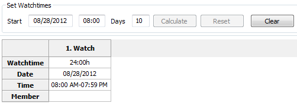
The today date and time are inserted automaticaly when you click 'Clear'
Alter the startdate and -time and the the approx. overall time in days of your journey(if desired).
The data in the 1.Watch change acordingly.
Enter now the most common watchtime e.g 4 hours.
You'll get this result (truncated) with 6 watches.
You need to enter for a full hour the digit/s only, no separator is used.
To enter minutes use one of the following formats:
4:30 or 4.30 or 4,30 or 0430
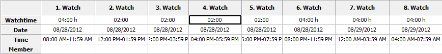
From 12:00 PM to 08:00 PM you like watches with 2 hours.
In the rightclick.menu select 'Split Watch' on 2.Watch.
Do the same in 4. Watch
As result you get 8 Watches.
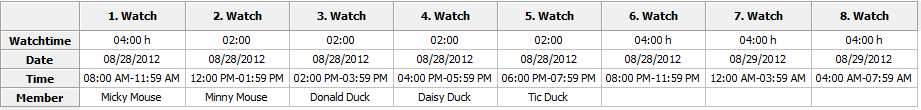
Drag 'n Drop this crewmembers to the watchlist continously. Never let a gap (empty cell) e.g. between 1. and 3.Watch, only at the end !!
But you can leave all Membercells empty. In this case you have to enter manualy (Drag 'n Drop) the members day by day for every watch.
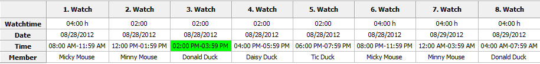
Click the 'Calculate'-Button.
The watchbase (= day 0) and the watchlist is calculated for 10 days and saved to disc. The current watch has a green background, if it's in the timeframe startdate/time + days of trip.
You can now use the watch-event in the logbook (click the watch-bullet in the logbook-statusbar) or view the watches in your browser/ODT-Program.
Click the forward-button to see the next day/s and the 'Now'-Button to go back to the actual watch.
All changes you make now (e.g. split a watch) are made for this day only (shown in the textbox).
Add a crewmember (Tric Duck) to the 3.Watch of the first day and use the forward/back-buttons to see what i mean..
To make changes to all watches click the 'Reset'-Button. This brings up the watchbase (=day 0).
Add now a crewmember (Tric Duck) to the 2.Watch in the watchlist and click the 'Calculate'-Button.
You see that calculate overrides all changes..
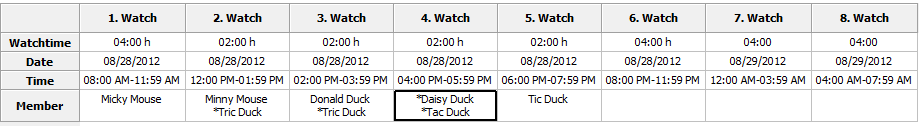
Click the 'Reset'-Button again and add the Crewmembers as in the image.
Delete the member in 5.Watch.
Click on the columheader (5.Watch), in the rightclick-menu select 'Delete Crewmembers'
*Tip: To select more than one column drag over the headers or use Strg-LeftMouseClick.
Now we make some Crewmembers static to a watch.
Click in the 2.Watch in the Member-Cell, select Tric Mouse, hit on your keyboard Pos1 and insert a asterisk.
Do this to all other members as shown in the image.
Click 'Calculate'
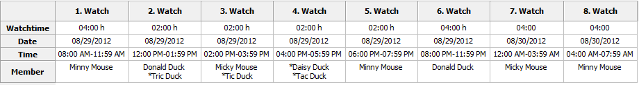
The images are showing day 1 and day 2.
As you can see on day 2 in the 2.Watch Tric Mouse hasn't changed but Minny to Donald.
The 4.Watch is completly static and doesn't change.
Click on the forward/back-button to see what i mean.
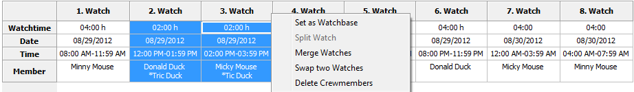
Select with forward/back-button the day 2.
To swap two watches select two watches by dragging over the headers or with Strg-LeftMouseClick.
Select in the rightclick-menu the option 'Swap two Watches'
To copy all members of a watch and erase the content drag the 'Member'-cell to another. Copy the 2. Watch to the 1.Watch.
To copy a single member of a watch click into the 'Member'-cell, move with the mouse to the (highlighted) desired member and drag them to the desired watch.
Do this with the 1.Watch (Minny Mouse). *Apple only Highlighting and automatic selecting of a row doesn't work.
To select a single member drag with the mouse over them and let the mousebutton up. Now you can drag the selected member to the desired watch.
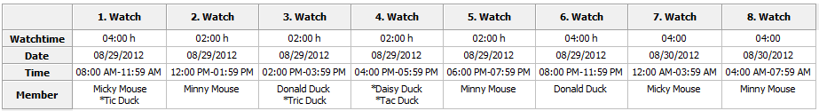
The result should look like in this image.
Minny Mouse gets seasick now.
To merge the 2. and the 3. Watch click in the columnheader of 2.Watch. In the rightclickmenu select 'Delete Crewmembers'.
Drag the 'Member'-cell of the 3.Watch to the 2. Watch,.
Drag over the columnheader of 2. and 3.Watch, select in the rightclick-menu the option 'Merge Watches'.
Merge the 4. and the 5. Watch, here you haven't to delete and copy the crewmembers. Allways the leftmost Member-cell keeps it's data.
In the 8.Watch delete the Crewmember and drag Daisy from the crewlist.
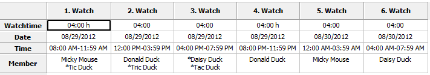
The result should look like this image.
Keep in mind that all the changes you've made are for this day (2) only. Go to day 1 or 3 to see this.
if Minny recovers the next day this is quite allright, but this doesn't happen.
To not make all the changes in the following days by hand use in the rightclick-menu the option 'Set as Watchbase'.
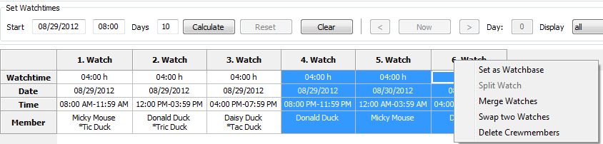
The startdate has changed to 8/29/2012.
We need the watches from 1 to 3 to repeat only.
Drag over the columnheaders 4 to 6 and select in the rightclick-menu 'Delete Crewmembers'.
Now you are at the same place as in this image in the example before.
Apply further changes if desired and click 'Calculate'
In this example i've showed you how to split and merge watches, but you can enter also the watchtimes individual.
Start a new example by clicking the 'Clear'-Button.
Enter in the 1.Watch in the cell 'Watchtime' 20. The result is 1.Watch = 20 Hours, the 2. Watch = 4 Hours.
Here you can see that the watches are allways filled up to 24 Hours.
Enter now in the 1.Watch a 4, don't care about the appened watch. Enter in the 2.Watch a 2.
Do so in the 3.,4. and 5.Watch. Enter in the 6. and 7.Watch a 4.
You'll get the same result as in this image before only in a different way. Use the way which suits you best.
Boat
The tab Boat has two sections:
Boat and Equipment
The buttons (Export, R, E. View), the rodiobuttons (HTML, ODT) and the dropdown-box has the same function as in the logbook tab.
In the section 'Boat' enter the data of your boat.
you don't need to enter data into all fields, but if you use the standardlayouts you should enter the following data:
(Boats)Name, Homeport, Callsign und Register.-No.
Using the section 'Equipment' is optional.
Here you can enter data for euipment which gets "lost" in the harbour, e.g. a Outboard.
Maybe it can be used as a certificate that this equiment was on board on a port of entry
'Equipment' isn't made to use it as a stowage-manger, therfore it's better you use the plugin 'FindIt'.
Click in the image on a gird-field or a button, a tab jump's to the next image
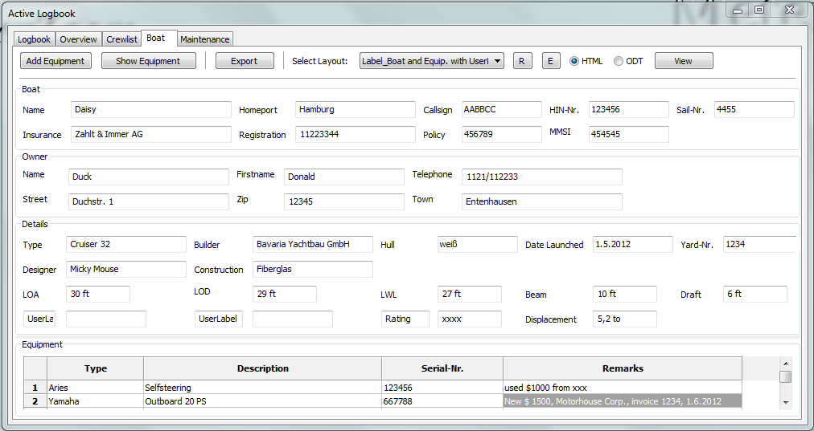
Add Equipment
By a click on this button the area of 'Equipment' grows and a new line is appened
Show Equipment
Grows/Shrinks the area of 'Equipment'
you can also use the separator between 'Boat' and 'Equipment' by drag 'n drop.
Boatdata
optional enter data here
you don't need to enter data into all fields, but if you use the standardlayouts you should enter the following data:
(Boats)Name, Homeport, Callsign und Register.-No.
UserLabel
create your own Labels, z.B. 'Rating'
To display these labels in your browser/ODT-program please choose a layout which contains 'with Userlabels'.
Typ
Typ oder Manufacturer of the equipment
Description
a description of the equipment
Seriial-No.
the serial-no. of the equipment
Remarks
your remarks
Maintenance
The maintenance tab has three sections:
Service
(repeating maintenance, e.g. changing oil in the engine)
Repairs (like a TODO-list)
Buy Parts(for the two tab's before or from the plugin 'FindIt')
The buttons (Export, R, E. View), the rodiobuttons (HTML, ODT) and the dropdown-box has the same function as in the logbook tab.
With a click on the columns-header the grid is sorted by this column
In all columns you can get a rightclick-menu
Rightclick-Menu
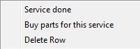
Service done
The background-color of the row changes to green, the frame-color is set to neutral, the priotity is set to 5 und the startvalue from the last logbook-row is inserted.
Here you create a
new
Interval.
Buy parts for this service
respectively Repairs
appends a line in the tab 'Buy Parts' and enters the data from the tab 'Service' or 'Repairs' automatically
delete Row
exactly this
if you delete this line and you choose 'Buy parts for this service' before, the appended line in 'Buy Parts' is
not
deleted automatically, too.
A example for the tab 'Service':
You like to change the oil every 100 h
Choose in the coloumn 'If' in the dropdowm-box 'Engine #1'
The startvalue is equal to the last logbook-entry (Engine/Sails) in the column '#1 total'
Alter the warnvalue to 90 and the urgentvalue to 100
*Optional*
You have to buy a tin of oil
With a rightclick in this row, you'll get the menu. Select the entry 'Buy parts for this service'. In 'Buy Parts' enter e.g. '3 Tins Oil xxx'.
Click for this demo the button 'Add Line' in the logbook-tab.
Alter the in '#1 total' the amount of motorhours to 90, The color of the frame changes to yellow, the background of the field also.
Alter the field to 100, frame- and field-color changes to red
You have changed the oil, now
Go to the tab 'Maintenance', rightclick in the (now in red) row for oil
Chosse the entry 'Service done'
The framecolor changes to neutral, the row-color changes to green, priority is set to 5 und the startvalue from the last logbook-row is entered
Here you start a new interval
Click in the image on a grid-field or a button, a tab jump's to the next image
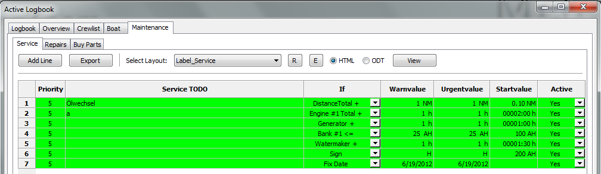
Repairs
Enter here repairs which don't have a interval. It acts like a TODO-list
You can select the dropdown-box the priority freely. This doesn't change the framecolor, like in 'Service'.
It has the same
rightclick-menu
like 'Service'. If you choose 'Repair done' the priority is set to zero.
With a click in the column-header the grid is sorted by the column.
Click in the image on a grid-field or a button, a tab jump's to the next image
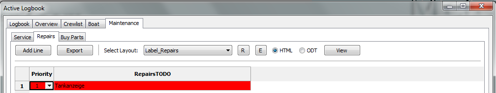
Priority
sets the background-color of the row
0 = neutral
1 = red
2 = light red
3 = yellow
4 = light yellow
5 = green
The priority in a row of 'Buy Parts' depends on the row in 'Repairs' or 'Service'
Repairs TODO
Enter your text ein, e.g. 'Tankgauge'
Buy Parts
Here you can enter the text for item you like to buy
It shows data from 'Service or 'Repairs' and (if installed and used) from the plugin 'FindIt'
You can freely choose the priority, it doesn't change the color of the frame
-
The only option in the rightclick-menu is 'Delete Row'
With a click in the column-header the grid is sorted by the column.
Click in the image on a grid-field or a button, a tab jump's to the next image
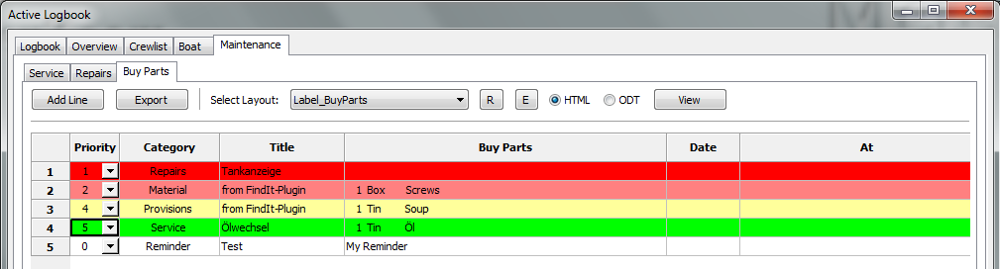
Priority
sets the background-color of the row
0 = neutral
1 = red
2 = light red
3 = yellow
4 = light yellow
5 = green
The priority in a row of 'Buy Parts' depends on the row in 'Repairs' or 'Service'
Category
displays from where the data are
Title
displays the text from 'Service' or 'Repairs' or if another plugins serves the data the name of the plugin
Buy Parts
insert the text of the items to buy
The plugin 'FindIt' inserts the data automatically
Date
the date you have planned to buy the items
At
where you planned to buy the items
Alter a layout
To alter/create a HTML-layout you need a HTML-editor
In the HTML-example the free HTML-editor KompoZer is used.
You can
download
here.
Keep sure, that in options
'Paths'
the path to the HTML-Editor is set, when you like to alter/create a layout.
Choose the format with the radiobutton (HTML or ODT)
Choose the label in the dropdown-box
Click the 'E'-Button
it opens the following dialog
Choose here the radiobutton 'Edit layout' und 'OK'
The HTML-editor opens with the defined layout
Important !
Save
immediatly
the original-layout with a different name in KompoZer (use 'Save as...' NOT 'Save')
so you asure that you don't overwrite the original.
*Optional* select a name with a underscore (e.g. My_example.html). Then you are able to filter/display your own layouts, only.
Click in the logbook the 'R'-Button, search and choose the layout you just saved (with the new name)..
Change to the HTML-program again.
You see that all Entries have a '#'-Sign. These are Placeholders and will be replaced by the logbook-plugin.
The Placeholder are divided in to sections, data and labels. The labels corresponding with the column-headers in the grid
All Labels have a prefix L (z.B. #LCOG#).
Alter as example the placeholder #LCOG# in 'Course over Ground'
Click the 'Save'-Button in the KompoZer-Program
change to the Logbook und hit the 'View'-Button.
View in the browser
You overwrite all labels in that way, is disired. But don't alter
never
the names of the data-placeholders.
Deleting unesseary data
You don't own a Catamaran/Motoryacht, thatswhy the second engine should disapper.
Go with the mouse to #LMOTOR1#, and drag to #LMOTOR1T.
Now four fields should marked
Press key 'Del' or choose 'Delete' in the rightclickmenu.
Klick Save (KompoZer) und 'View' (Logbook)
Delete for example the Generator and the Watermaker, too
Move contents
Notice: KompoZer seems to move data correctly only horizontal. Please don't select, like described in 'Delete unessesary data'
Mark the fields #LFUEL# and #FUEL#
Press the keys Strg+x
Mark horizontal the two empty fields next to #MOTOR#
Press the keys Strg+v
Repeat this for the fields #LFUELT# und #FUELT#
Click Save (KompoZer) and 'View' (Logbook)
Move for example the Batterybanks and the Water-data
The layout now should look like:
Click in the last line and with a rightclick in the menu choose 'delete Tabele ' and in the Submenu click 'Row(s)'
The row is deleted.
In this way you can also delete columns (select here 'Column(s)')
Click Save (KompoZer) and 'View' (Logbook)
Create a new layout
It's not hard to create a new layout, even if you never worked with HTML.
If you have a connection to the internet, please take a look at this video: